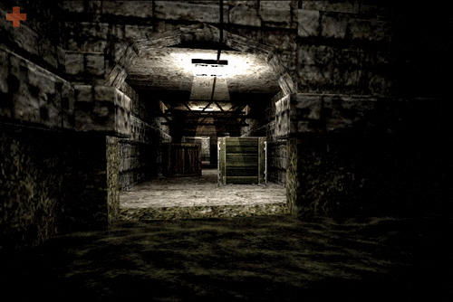

Pleasingpixels: De_mayariver, Counter-Strike 1.6
Bonus pleasingpixels this week: I’m experimenting with cinemagraph-styled pictures like the one in this post, which I’d publish every now and then. Tumblr limits the size of gifs and therefore the quality, so please don’t hesitate to give me feedback: Should I post more of them from time to time?